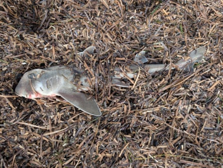

South Australia’s toxic algal bloom has arrived on Adelaide’s beaches, deepening public concern about the unfolding catastrophe, which has affected the state’s coastline since March.
Until recently, city beaches had escaped the worst of the deadly bloom of Karenia mikimotoi algae, which had devastated marine life from the Fleurieu peninsula, to Kangaroo Island, the Yorke peninsula and the Ramsar-listed Coorong, amid warmer than normal sea temperatures.
But in the wake of a major storm on 24 June , masses of dead rays, fish and rare and unusual marine life began washing up from north of Grange jetty to south of Christies beach surf club.
“Until that time, it hadn’t hit metro Adelaide ,” said marine biologist Dr Michael Bossley. “Suddenly, the people of Adelaide and the government and just about everybody are doubling down on their concern.”
This week, South Australia’s environment minister Dr Susan Close said the state was “helpless in the force of nature”. She said the bloom was unlikely to disappear any time soon, and could return in future.
“The algal bloom is a dynamic situation. Its movement depends on weather and water conditions, and [that] makes the effect on people and wildlife unpredictable.”
People living in Adelaide have been shocked to see large numbers of dead fish and other sea life wash up on their beaches.Photograph: Brad Martin OzFish
The state government had hoped that storms and cooler water temperatures would help break up the bloom. So far that hasn’t happened; instead storms have helped the algae spread to new waterways.
Testing by the state government confirmed the algae’s presence in West Lakes, a lake-side suburb in Adelaide’s west, with further testing being done at 14 sites, including the Port River, home to the Adelaide Dolphin Sanctuary.
Since the start of the bloom in March, about 8,000 dead marine animals have been recorded as part of the SA Marine Mortalities project , affecting 390 different species.
- Sign up to get climate and environment editor Adam Morton’s Clear Air column as a free newsletter
Fishing conservation charity OzFish has been part of that statewide citizen science effort.
“We know that sponge gardens and shellfish beds – mussels, native oysters, razor fish – a lot of those areas are now considered graveyards, because they’ve been completely wiped out by the bloom,” OzFish South Australian project manager Brad Martin said.
“The concern at the moment is whether [the algae] is going to enter urban estuaries and waterways,” he said. “The Onkaparinga, West Lakes and the Port River are all areas of concern; they’re popular recreational fishing sites, with access to the ocean.”
The fish were being “poisoned, they’re being choked to death, and they need to bounce back as quickly as possible,” said Asher Dezsery, executive officer for RecFish SA, the peak body for fishers and tackle shops.
That not only affected catches – some fisheries, like Goolwa pipis, had experienced mortality rates of 37% – but had flow-on effects for tourism and businesses. Many tackle stores were on the brink of shutting down, he said.
On Friday, the state government met commercial fishers, tourism operators and local councils as it prepared a recovery plan for when the bloom eventually recedes.
No end in sight
While sea surface temperatures in shallow waters have been falling, marine heatwave conditions – with water temperatures 1 to 2C above average – have persisted in deeper continental shelf waters around Kangaroo Island and southern Yorke peninsula.
Marine heatwaves, which had triggered the bloom, were happening around Australia and all around the world, Bossley said. “It’s climate change happening.”